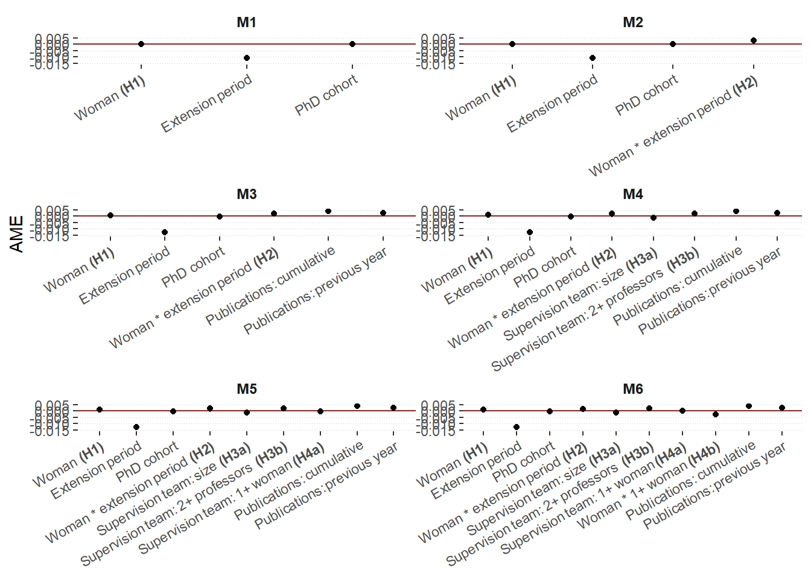
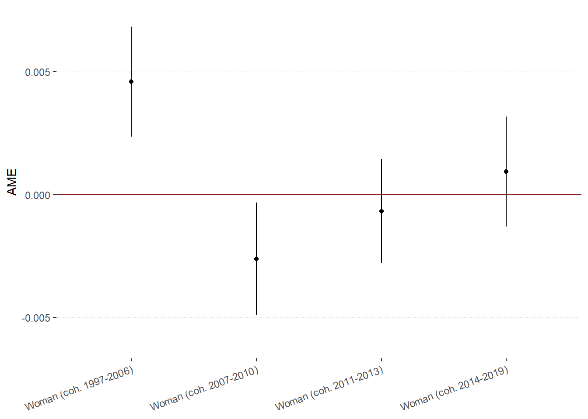

Mentoring for gender equality in early-career grant receipt: figures
Last compiled on 2024-05-28
This lab journal demonstrates how we create the figures featured in the paper.
1 Custom functions
package.check: Check if packages are installed (and install if not) in R (source).
rm(list=ls())
fpackage.check <- function(packages) {
lapply(packages, FUN = function(x) {
if (!require(x, character.only = TRUE)) {
install.packages(x, dependencies = TRUE)
library(x, character.only = TRUE)
}
})
}
fsave <- function(x, file, location="./data/processed/") {
datename <- substr(gsub("[:-]", "", Sys.time()), 1,8)
totalname <- paste(location, datename, file, sep="")
save(x, file = totalname)
}2 Packages
tidyverse: For general data manipulationboot: To create bootstrapped standard errors, following the procedure delineated hereggtext: to edit formatting of text in ggplot figures
packages = c("tidyverse", "boot", "ggtext")
fpackage.check(packages)## Loading required package: ggtext3 Input
We use several results objects:
veni_ppf: Processed dataset containing all independent variables and the dependent variable
- name of dataset:
veni_ppf - used here to show Veni hazard rates per year after obtaining doctorate
- name of dataset:
20240319boot1-3c.rda: results of our main analyses with bootstrapped standard errors
20240527boot4.rda: results of our main analyses with bootstrapped standard errors
20240322robustness3a-d.rda: results of our models split out by cohort
load("./data/processed/veni_ppf.rda")
load("./results/20240319boot1.rda")
b1 <- x
rm(x)
load("./results/20240319boot2.rda")
b2 <- x
rm(x)
load("./results/20240319boot3a.rda")
b3 <- x
rm(x)
load("./results/20240319boot3b.rda")
b4 <- x
rm(x)
load("./results/20240319boot3c.rda")
b5 <- x
rm(x)
load("./results/20240527boot4.rda")
b6 <- x
rm(x)
load(file = "./results/robustness/20240322robustness3a.rda")
coh1 <- x
rm(x)
load(file = "./results/robustness/20240322robustness3b.rda")
coh2 <- x
rm(x)
load(file = "./results/robustness/20240322robustness3c.rda")
coh3 <- x
rm(x)
load(file = "./results/robustness/20240322robustness3d.rda")
coh4 <- x
rm(x)3.1 Figure 1: Veni hazard rate by time and gender
menc <- "#D1C166"
womenc <- "#48a363"
veni_ppf %>%
filter(year>2002) %>%
group_by(time, gender_2) %>%
summarise(event = sum(veni),
total = n()) %>%
mutate(hazard = event/total) %>%
ggplot(aes(x=time, y = hazard, group = gender_2, color=gender_2)) +
geom_point() +
labs(x = "Time in years since doctorate receipt", y="Hazard") +
geom_line() +
scale_color_manual(values=c(menc, womenc), name="Gender") +
theme(axis.title=element_text(face="bold"),
legend.title=element_text(face="bold"),
panel.grid.major.x = element_blank(),
panel.background = element_rect(fill="white"),
panel.grid.major.y = element_line(color="#C9c9c9", linewidth=0.2),
panel.grid.minor=element_blank())## `summarise()` has grouped output by 'time'. You can
## override using the `.groups` argument.
ggsave("./output/plot1.jpg", height=8, width=12, dpi=2000)3.2 Figure 2: Model coefficients
Loading in the model output and creating dataframes for each model
original <- b1$t0
bias <- colMeans(b1$t) - b1$t0
se <- apply(b1$t, 2, sd)
boot.df1 <- data.frame(original=original, bias=bias, se=se)
row.names(boot.df1) <- c("AME_gender", "AME_ext", "AME_cohort")
boot.df1$t <- (boot.df1$original / boot.df1$se)
round(boot.df1, 5)## original bias se t
## AME_gender 0.00022 0e+00 0.00054 0.40235
## AME_ext -0.01081 2e-05 0.00051 -21.01267
## AME_cohort -0.00018 0e+00 0.00004 -4.51981original <- b2$t0
bias <- colMeans(b2$t) - b2$t0
se <- apply(b2$t, 2, sd)
boot.df2 <- data.frame(original=original, bias=bias, se=se)
row.names(boot.df2) <- c("AME_gender", "AME_ext", "AME_genderext","AME_cohort")
boot.df2$t <- (boot.df2$original / boot.df2$se)
round(boot.df2, 5)## original bias se t
## AME_gender 0.00023 3e-05 0.00058 0.39937
## AME_ext -0.01081 2e-05 0.00052 -20.69055
## AME_genderext 0.00273 -3e-05 0.00109 2.49463
## AME_cohort -0.00018 0e+00 0.00004 -4.59196original <- b3$t0
bias <- colMeans(b3$t) - b3$t0
se <- apply(b3$t, 2, sd)
boot.df3 <- data.frame(original=original, bias=bias, se=se)
row.names(boot.df3) <- c("AME_gender", "AME_ext", "AME_genderext", "AME_cohort", "AME_cumulpubs", "AME_prevpubs")
boot.df3$t <- (boot.df3$original / boot.df3$se)
round(boot.df3, 5)## original bias se t
## AME_gender 0.00066 2e-05 0.00059 1.11151
## AME_ext -0.01286 0e+00 0.00070 -18.34983
## AME_genderext 0.00206 -1e-05 0.00124 1.66310
## AME_cohort -0.00019 0e+00 0.00005 -3.91884
## AME_cumulpubs 0.00394 2e-05 0.00049 7.97767
## AME_prevpubs 0.00233 2e-05 0.00049 4.78615original <- b4$t0
bias <- colMeans(b4$t) - b4$t0
se <- apply(b4$t, 2, sd)
boot.df4 <- data.frame(original=original, bias=bias, se=se)
row.names(boot.df4) <- c("AME_gender", "AME_ext", "AME_genderext", "AME_cohort", "AME_cumulpubs", "AME_prevpubs", "AME_netsize", "AME_prof")
boot.df4$t <- (boot.df4$original / boot.df4$se)
round(boot.df4, 5)## original bias se t
## AME_gender 0.00079 0e+00 0.00061 1.29405
## AME_ext -0.01286 1e-05 0.00070 -18.25910
## AME_genderext 0.00184 1e-05 0.00129 1.42351
## AME_cohort -0.00020 0e+00 0.00005 -4.14135
## AME_cumulpubs 0.00392 -1e-05 0.00049 7.95736
## AME_prevpubs 0.00232 3e-05 0.00049 4.71760
## AME_netsize -0.00129 0e+00 0.00035 -3.64775
## AME_prof 0.00194 -3e-05 0.00079 2.46637original <- b5$t0
bias <- colMeans(b5$t) - b5$t0
se <- apply(b5$t, 2, sd)
boot.df5 <- data.frame(original=original, bias=bias, se=se)
row.names(boot.df5) <- c("AME_gender", "AME_ext", "AME_genderext", "AME_cohort", "AME_cumulpubs", "AME_prevpubs", "AME_netsize", "AME_prof", "AME_womsv")
boot.df5$t <- (boot.df5$original / boot.df5$se)
round(boot.df5, 5)## original bias se t
## AME_gender 0.00084 0e+00 0.00058 1.43790
## AME_ext -0.01285 2e-05 0.00070 -18.48294
## AME_genderext 0.00175 -1e-05 0.00126 1.38431
## AME_cohort -0.00019 0e+00 0.00005 -3.70835
## AME_cumulpubs 0.00392 -2e-05 0.00049 7.99128
## AME_prevpubs 0.00232 2e-05 0.00050 4.67311
## AME_netsize -0.00124 -2e-05 0.00039 -3.19539
## AME_prof 0.00194 2e-05 0.00083 2.33049
## AME_womsv -0.00041 3e-05 0.00066 -0.61565original <- b6$t0
bias <- colMeans(b6$t) - b6$t0
se <- apply(b6$t, 2, sd)
boot.df6 <- data.frame(original=original, bias=bias, se=se)
row.names(boot.df6) <- c("AME_gender", "AME_ext", "AME_genderext", "AME_cohort", "AME_cumulpubs", "AME_prevpubs", "AME_netsize", "AME_prof", "AME_womsv", "AME_genderwomsv")
boot.df6$t <- (boot.df6$original / boot.df6$se)
round(boot.df6, 5)## original bias se t
## AME_gender 0.00087 -4e-05 0.00060 1.44768
## AME_ext -0.01288 0e+00 0.00072 -18.01739
## AME_genderext 0.00164 6e-05 0.00125 1.30976
## AME_cohort -0.00020 0e+00 0.00005 -3.87028
## AME_cumulpubs 0.00395 0e+00 0.00048 8.24530
## AME_prevpubs 0.00230 3e-05 0.00049 4.72407
## AME_netsize -0.00125 0e+00 0.00038 -3.32310
## AME_prof 0.00196 4e-05 0.00076 2.56946
## AME_womsv -0.00011 1e-05 0.00067 -0.15864
## AME_genderwomsv -0.00284 0e+00 0.00126 -2.24997tot <- "#414141"
menc <- "#D1C166"
womenc <- "#48a363"Extracting relevant coefficients and creating a combined dataframe containing the results of all models
boot.df1 %>%
mutate(ame = original,
model = "M1") %>%
select(ame, se, model) -> ames1
boot.df2 %>%
mutate(ame = original,
model = "M2") %>%
select(ame, se, model) -> ames2
boot.df3 %>%
mutate(ame = original,
model = "M3") %>%
select(ame, se, model) -> ames3
boot.df4 %>%
mutate(ame = original,
model = "M4") %>%
select(ame, se, model) -> ames4
boot.df5 %>%
mutate(ame = original,
model = "M5") %>%
select(ame, se, model) -> ames5
boot.df6 %>%
mutate(ame = original,
model = "M6") %>%
select(ame, se, model) -> ames6
AMEs <- do.call("rbind", list(ames1, ames2, ames3, ames4, ames5, ames6))
AMEs$cov2 <- str_extract(rownames(AMEs), "AME_[:alpha:]+")
AMEs$covariate <- ""
AMEs$covariate <- ifelse(AMEs$cov2=="AME_gender", "Woman **(H1)**", AMEs$covariate)
AMEs$covariate <- ifelse(AMEs$cov2=="AME_ext", "Extension period", AMEs$covariate)
AMEs$covariate <- ifelse(AMEs$cov2=="AME_cohort", "PhD cohort", AMEs$covariate)
AMEs$covariate <- ifelse(AMEs$cov2=="AME_genderext", "Woman * extension period **(H2)**", AMEs$covariate)
AMEs$covariate <- ifelse(AMEs$cov2=="AME_cumulpubs", "Publications: cumulative", AMEs$covariate)
AMEs$covariate <- ifelse(AMEs$cov2=="AME_prevpubs", "Publications: previous year", AMEs$covariate)
AMEs$covariate <- ifelse(AMEs$cov2=="AME_netsize", "Supervision team: size **(H3a)**", AMEs$covariate)
AMEs$covariate <- ifelse(AMEs$cov2=="AME_prof", "Supervision team: 2+ professors **(H3b)**", AMEs$covariate)
AMEs$covariate <- ifelse(AMEs$cov2=="AME_womsv", "Supervision team: 1+ woman **(H4a)**", AMEs$covariate)
AMEs$covariate <- ifelse(AMEs$cov2=="AME_gendersize", "Woman * team size", AMEs$covariate)
AMEs$covariate <- ifelse(AMEs$cov2=="AME_genderprof", "Woman * 2+ professors", AMEs$covariate)
AMEs$covariate <- ifelse(AMEs$cov2=="AME_genderwomsv", "Woman * 1+ woman **(H4b)**", AMEs$covariate)
AMEs$covariate <- factor(AMEs$covariate, levels=c("Woman **(H1)**", "Extension period", "PhD cohort", "Woman * extension period **(H2)**", "Supervision team: size **(H3a)**", "Supervision team: 2+ professors **(H3b)**", "Supervision team: 1+ woman **(H4a)**", "Woman * team size", "Woman * 2+ professors", "Woman * 1+ woman **(H4b)**", "Publications: cumulative", "Publications: previous year"))
AMEs$model <- factor(AMEs$model, levels=c("M1", "M2", "M3", "M4", "M5", "M6"))
#AMEs$model <- factor(AMEs$model, levels=c("M6", "M5", "M4", "M3", "M2", "M1"))
AMEs <- AMEs %>% arrange(covariate, model)ggplot(AMEs, aes(y=ame, x=covariate)) +
geom_hline(yintercept=0, color="brown4", linewidth=.5) +
geom_point() +
facet_wrap(model ~ ., nrow=3, ncol=2, scales = "free") +
geom_pointrange(aes(ymin = ame - 1.96*se, ymax = ame + 1.96*se), size=0.1) +
scale_y_continuous(limits = c(-0.015, 0.005), breaks=seq(-0.015, 0.005, by = 0.005)) +
labs(y="AME") +
theme(axis.title.x = element_blank(),
axis.text.x = element_markdown(angle=30, hjust=1, vjust=1),
legend.position = "none",
strip.text.x = element_markdown(angle=0, size=9, face="bold"),
strip.background = element_blank(),
panel.background = element_rect(fill="white"),
panel.spacing = unit(0.1, 'points'),
panel.grid.major.y = element_line(color="#C9c9c9", linewidth=0.2, linetype=3),
panel.grid.minor=element_blank(),
panel.grid.major.x=element_blank())
ggsave("./output/plot2.jpg", height=8, width=12, dpi=2400)3.3 Figure 3: Cohort splits
original <- coh1$t0
bias <- colMeans(coh1$t) - coh1$t0
se <- apply(coh1$t, 2, sd)
df.robust3a <- data.frame(original=original, bias=bias, se=se)
row.names(df.robust3a) <- c("AME_gender_m1", "AME_gender_m2", "AME_gender_m3a", "AME_gender_m3b", "AME_gender_m3c", "AME_gender_m4", "AME_time_m1", "AME_time_m2", "AME_time_m3a", "AME_time_m3b", "AME_time_m3c", "AME_time_m4", "AME_gendertime_m2", "AME_gendertime_m3a", "AME_gendertime_m3b", "AME_gendertime_m3c", "AME_gendertime_m4", "AME_netsize_m3b", "AME_netsize_m3c", "AME_netsize_m4", "AME_prof_m3b", "AME_prof_m3c", "AME_prof_m4", "AME_womsv_m3c", "AME_womsv_m4", "AME_gendersize_m4", "AME_genderprof_m4", "AME_genderwomsv_m4", "AME_gender_d3ab")
df.robust3a$t <- (df.robust3a$original / df.robust3a$se)
round(df.robust3a, 5)## original bias se t
## AME_gender_m1 0.00410 0.00007 0.00106 3.87995
## AME_gender_m2 0.00411 0.00007 0.00106 3.88650
## AME_gender_m3a 0.00458 0.00011 0.00114 4.02266
## AME_gender_m3b 0.00470 0.00011 0.00117 4.03002
## AME_gender_m3c 0.00470 0.00011 0.00117 3.99661
## AME_gender_m4 0.00495 0.00011 0.00120 4.13903
## AME_time_m1 -0.00572 0.00002 0.00053 -10.83959
## AME_time_m2 -0.00572 0.00002 0.00053 -10.84431
## AME_time_m3a -0.00647 0.00001 0.00074 -8.80022
## AME_time_m3b -0.00649 0.00001 0.00074 -8.79497
## AME_time_m3c -0.00649 0.00001 0.00074 -8.79963
## AME_time_m4 -0.00653 0.00001 0.00074 -8.80319
## AME_gendertime_m2 -0.00238 -0.00007 0.00112 -2.12644
## AME_gendertime_m3a -0.00317 -0.00012 0.00136 -2.32568
## AME_gendertime_m3b -0.00328 -0.00012 0.00140 -2.34735
## AME_gendertime_m3c -0.00327 -0.00012 0.00141 -2.33038
## AME_gendertime_m4 -0.00351 -0.00012 0.00145 -2.42463
## AME_netsize_m3b -0.00073 0.00001 0.00064 -1.12834
## AME_netsize_m3c -0.00073 0.00001 0.00066 -1.10268
## AME_netsize_m4 -0.00065 -0.00001 0.00068 -0.95801
## AME_prof_m3b -0.00009 -0.00001 0.00168 -0.05189
## AME_prof_m3c -0.00008 -0.00001 0.00168 -0.04987
## AME_prof_m4 0.00031 0.00001 0.00178 0.17189
## AME_womsv_m3c 0.00007 0.00002 0.00138 0.05439
## AME_womsv_m4 -0.00003 0.00007 0.00143 -0.01791
## AME_gendersize_m4 -0.00280 -0.00002 0.00150 -1.86283
## AME_genderprof_m4 -0.00285 0.00005 0.00165 -1.72849
## AME_genderwomsv_m4 -0.00118 -0.00005 0.00159 -0.74387
## AME_gender_d3ab 0.00012 0.00000 0.00011 1.07254df.robust3a <- df.robust3a[3,]
df.robust3a %>%
mutate(ame = original,
cohort = "Cohort 1") %>%
select(ame, se, cohort) -> ames1
original <- coh2$t0
bias <- colMeans(coh2$t) - coh2$t0
se <- apply(coh2$t, 2, sd)
df.robust3b <- data.frame(original=original, bias=bias, se=se)
row.names(df.robust3b) <- c("AME_gender_m1", "AME_gender_m2", "AME_gender_m3a", "AME_gender_m3b", "AME_gender_m3c", "AME_gender_m4", "AME_time_m1", "AME_time_m2", "AME_time_m3a", "AME_time_m3b", "AME_time_m3c", "AME_time_m4", "AME_gendertime_m2", "AME_gendertime_m3a", "AME_gendertime_m3b", "AME_gendertime_m3c", "AME_gendertime_m4", "AME_netsize_m3b", "AME_netsize_m3c", "AME_netsize_m4", "AME_prof_m3b", "AME_prof_m3c", "AME_prof_m4", "AME_womsv_m3c", "AME_womsv_m4", "AME_gendersize_m4", "AME_genderprof_m4", "AME_genderwomsv_m4", "AME_gender_d3ab")
df.robust3b$t <- (df.robust3b$original / df.robust3b$se)
round(df.robust3b, 5) ## original bias se t
## AME_gender_m1 -0.00280 -4e-05 0.00113 -2.48315
## AME_gender_m2 -0.00280 -4e-05 0.00113 -2.47604
## AME_gender_m3a -0.00261 -3e-05 0.00116 -2.24106
## AME_gender_m3b -0.00241 -4e-05 0.00118 -2.04718
## AME_gender_m3c -0.00243 -4e-05 0.00120 -2.02877
## AME_gender_m4 -0.00239 -4e-05 0.00120 -1.99118
## AME_time_m1 -0.00819 4e-05 0.00060 -13.69116
## AME_time_m2 -0.00819 4e-05 0.00060 -13.68547
## AME_time_m3a -0.01004 2e-05 0.00094 -10.67558
## AME_time_m3b -0.01005 2e-05 0.00094 -10.69167
## AME_time_m3c -0.01004 2e-05 0.00094 -10.68705
## AME_time_m4 -0.01002 2e-05 0.00094 -10.68477
## AME_gendertime_m2 0.00522 0e+00 0.00123 4.23301
## AME_gendertime_m3a 0.00567 2e-05 0.00149 3.79435
## AME_gendertime_m3b 0.00546 2e-05 0.00149 3.65496
## AME_gendertime_m3c 0.00549 2e-05 0.00151 3.64315
## AME_gendertime_m4 0.00549 2e-05 0.00152 3.62438
## AME_netsize_m3b -0.00184 -1e-05 0.00078 -2.36553
## AME_netsize_m3c -0.00187 -1e-05 0.00078 -2.39841
## AME_netsize_m4 -0.00191 -3e-05 0.00078 -2.43753
## AME_prof_m3b 0.00131 8e-05 0.00149 0.87801
## AME_prof_m3c 0.00133 9e-05 0.00150 0.88361
## AME_prof_m4 0.00140 1e-04 0.00151 0.92911
## AME_womsv_m3c 0.00022 4e-05 0.00150 0.15008
## AME_womsv_m4 0.00038 5e-05 0.00152 0.25383
## AME_gendersize_m4 -0.00172 0e+00 0.00157 -1.09549
## AME_genderprof_m4 0.00014 2e-05 0.00160 0.08972
## AME_genderwomsv_m4 -0.00057 -7e-05 0.00142 -0.40502
## AME_gender_d3ab 0.00020 0e+00 0.00010 1.93885df.robust3b <- df.robust3b[3,]
df.robust3b %>%
mutate(ame = original,
cohort = "Cohort 2") %>%
select(ame, se, cohort) -> ames2
original <- coh3$t0
bias <- colMeans(coh3$t) - coh3$t0
se <- apply(coh3$t, 2, sd)
df.robust3c <- data.frame(original=original, bias=bias, se=se)
row.names(df.robust3c) <- c("AME_gender_m1", "AME_gender_m2", "AME_gender_m3a", "AME_gender_m3b", "AME_gender_m3c", "AME_gender_m4", "AME_time_m1", "AME_time_m2", "AME_time_m3a", "AME_time_m3b", "AME_time_m3c", "AME_time_m4", "AME_gendertime_m2", "AME_gendertime_m3a", "AME_gendertime_m3b", "AME_gendertime_m3c", "AME_gendertime_m4", "AME_netsize_m3b", "AME_netsize_m3c", "AME_netsize_m4", "AME_prof_m3b", "AME_prof_m3c", "AME_prof_m4", "AME_womsv_m3c", "AME_womsv_m4", "AME_gendersize_m4", "AME_genderprof_m4", "AME_genderwomsv_m4", "AME_gender_d3ab")
df.robust3c$t <- (df.robust3c$original / df.robust3c$se)
round(df.robust3c, 5)## original bias se t
## AME_gender_m1 -0.00096 -0.00004 0.00105 -0.91919
## AME_gender_m2 -0.00096 -0.00004 0.00105 -0.91418
## AME_gender_m3a -0.00069 -0.00004 0.00108 -0.63805
## AME_gender_m3b -0.00078 -0.00003 0.00108 -0.72430
## AME_gender_m3c -0.00068 -0.00003 0.00108 -0.63551
## AME_gender_m4 -0.00063 -0.00003 0.00108 -0.58663
## AME_time_m1 -0.00488 -0.00001 0.00058 -8.48133
## AME_time_m2 -0.00488 -0.00001 0.00058 -8.48240
## AME_time_m3a -0.00648 -0.00001 0.00079 -8.16388
## AME_time_m3b -0.00644 -0.00001 0.00079 -8.12686
## AME_time_m3c -0.00642 -0.00001 0.00078 -8.18099
## AME_time_m4 -0.00638 -0.00001 0.00078 -8.15264
## AME_gendertime_m2 0.00289 0.00002 0.00107 2.69736
## AME_gendertime_m3a 0.00302 0.00002 0.00130 2.32146
## AME_gendertime_m3b 0.00309 0.00002 0.00131 2.37039
## AME_gendertime_m3c 0.00299 0.00002 0.00130 2.29471
## AME_gendertime_m4 0.00293 0.00002 0.00129 2.27510
## AME_netsize_m3b -0.00095 -0.00007 0.00078 -1.21830
## AME_netsize_m3c -0.00087 -0.00008 0.00081 -1.07356
## AME_netsize_m4 -0.00105 -0.00010 0.00082 -1.29127
## AME_prof_m3b 0.00317 0.00010 0.00144 2.20285
## AME_prof_m3c 0.00318 0.00010 0.00144 2.21288
## AME_prof_m4 0.00316 0.00014 0.00144 2.18620
## AME_womsv_m3c -0.00066 0.00003 0.00120 -0.55582
## AME_womsv_m4 -0.00073 0.00004 0.00120 -0.61270
## AME_gendersize_m4 -0.00249 0.00013 0.00149 -1.67461
## AME_genderprof_m4 -0.00063 -0.00014 0.00140 -0.45211
## AME_genderwomsv_m4 0.00128 -0.00004 0.00121 1.05516
## AME_gender_d3ab -0.00010 0.00001 0.00008 -1.16607df.robust3c <- df.robust3c[3,]
df.robust3c %>%
mutate(ame = original,
cohort = "Cohort 3") %>%
select(ame, se, cohort) -> ames3
original <- coh4$t0
bias <- colMeans(coh4$t) - coh4$t0
se <- apply(coh4$t, 2, sd)
df.robust3d <- data.frame(original=original, bias=bias, se=se)
row.names(df.robust3d) <- c("AME_gender_m1", "AME_gender_m2", "AME_gender_m3a", "AME_gender_m3b", "AME_gender_m3c", "AME_gender_m4", "AME_time_m1", "AME_time_m2", "AME_time_m3a", "AME_time_m3b", "AME_time_m3c", "AME_time_m4", "AME_gendertime_m2", "AME_gendertime_m3a", "AME_gendertime_m3b", "AME_gendertime_m3c", "AME_gendertime_m4", "AME_netsize_m3b", "AME_netsize_m3c", "AME_netsize_m4", "AME_prof_m3b", "AME_prof_m3c", "AME_prof_m4", "AME_womsv_m3c", "AME_womsv_m4", "AME_gendersize_m4", "AME_genderprof_m4", "AME_genderwomsv_m4", "AME_gender_d3ab")
df.robust3d$t <- (df.robust3d$original / df.robust3d$se)
round(df.robust3d, 5)## original bias se t
## AME_gender_m1 -0.00047 -0.00007 0.00104 -0.44804
## AME_gender_m2 -0.00047 -0.00007 0.00104 -0.44900
## AME_gender_m3a 0.00093 -0.00007 0.00114 0.81820
## AME_gender_m3b 0.00113 -0.00006 0.00113 1.00313
## AME_gender_m3c 0.00112 -0.00007 0.00117 0.95897
## AME_gender_m4 0.00109 -0.00007 0.00117 0.92887
## AME_time_m1 -0.00332 -0.00002 0.00046 -7.28329
## AME_time_m2 -0.00331 -0.00002 0.00046 -7.26124
## AME_time_m3a -0.00367 -0.00002 0.00049 -7.55585
## AME_time_m3b -0.00365 -0.00002 0.00049 -7.48595
## AME_time_m3c -0.00365 -0.00002 0.00049 -7.47845
## AME_time_m4 -0.00365 -0.00002 0.00049 -7.47848
## AME_gendertime_m2 -0.00030 0.00002 0.00083 -0.35758
## AME_gendertime_m3a -0.00102 0.00002 0.00085 -1.19308
## AME_gendertime_m3b -0.00113 0.00002 0.00085 -1.32235
## AME_gendertime_m3c -0.00113 0.00003 0.00087 -1.29086
## AME_gendertime_m4 -0.00110 0.00003 0.00088 -1.26005
## AME_netsize_m3b -0.00138 0.00001 0.00073 -1.87484
## AME_netsize_m3c -0.00138 0.00000 0.00076 -1.82769
## AME_netsize_m4 -0.00151 -0.00001 0.00079 -1.91053
## AME_prof_m3b 0.00021 -0.00003 0.00132 0.15967
## AME_prof_m3c 0.00021 -0.00003 0.00132 0.15868
## AME_prof_m4 0.00038 0.00000 0.00139 0.27287
## AME_womsv_m3c 0.00004 0.00007 0.00126 0.03013
## AME_womsv_m4 0.00029 0.00006 0.00133 0.22214
## AME_gendersize_m4 0.00259 0.00011 0.00160 1.62223
## AME_genderprof_m4 -0.00203 -0.00004 0.00130 -1.56274
## AME_genderwomsv_m4 -0.00169 0.00002 0.00130 -1.29963
## AME_gender_d3ab 0.00020 0.00000 0.00011 1.79946df.robust3d <- df.robust3d[3,]
df.robust3d %>%
mutate(ame = original,
cohort = "Cohort 4") %>%
select(ame, se, cohort) -> ames4
AMEs <- do.call("rbind", list(ames1, ames2, ames3, ames4))
AMEs$covariate <- c("Woman (coh. 1997-2006)", "Woman (coh. 2007-2010)", "Woman (coh. 2011-2013)", "Woman (coh. 2014-2019)")ggplot(AMEs, aes(y=ame, x=covariate)) +
geom_hline(yintercept=0, color="brown4", linewidth=.5) +
geom_point() +
geom_pointrange(aes(ymin = ame - 1.96*se, ymax = ame + 1.96*se), size=0.1) +
scale_y_continuous(limits = c(-0.006, 0.007), breaks=seq(-0.005, 0.010, by = 0.005)) +
labs(y="AME") +
theme(axis.title.x = element_blank(),
axis.text.x = element_markdown(angle=20, hjust=1, vjust=1),
legend.position = "none",
strip.text.x = element_markdown(angle=0, size=9, face="bold"),
strip.background = element_blank(),
panel.background = element_rect(fill="white"),
panel.spacing = unit(0.1, 'points'),
panel.grid.major.y = element_line(color="#C9c9c9", linewidth=0.2, linetype=3),
panel.grid.minor=element_blank(),
panel.grid.major.x=element_blank())
ggsave("./output/plot3.jpg", height=8, width=12, dpi=2400)Copyright © 2024